Quantum coherence and entanglement for complex chemical and biological systems
The objective is to understand the role of quantum coherence and entanglement in complex systems such as photosynthesis, avian compass, solar cells, and complex chemical reactions.
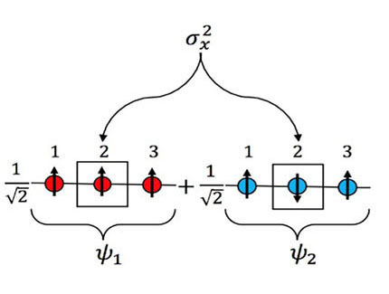
Adiabatic Quantum Computing
The exact solution of Schrodinger equation for atoms, molecules and extended systems continues to be a "Holy Grail" problem that the entire field has been striving to solve since its inception.
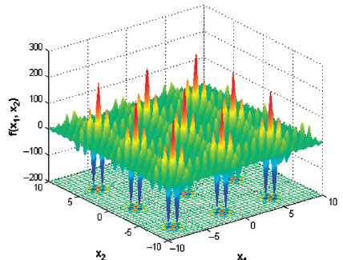
Quantum Algorithms for Quantum Chemistry
Quantum simulation is one of the most promising near term applications for quantum computation that could demonstrate significant advantage over classical algorithms.
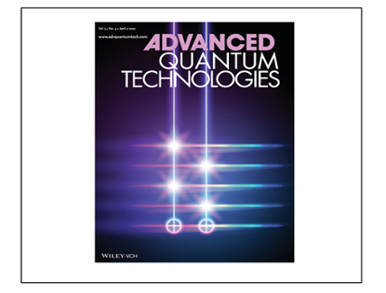
The Quantum Condition Space
The fundamental properties of quantum physics are exploited to evaluate event probabilities with projection measurements. Next, to study what events can be specified by quantum methods, the concept of the condition space is introduced, which is found to be the dual space of the classical outcome space of bit strings.
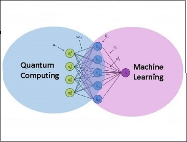
Quantum Machine Learning
Developing game-changing quantum algorithms to perform machine learning tasks on large-scale scientific datasets for various industrial and technological applications.
Quantum machine learning — a hybridization of classical machine learning techniques with quantum computation – is emerging as a powerful approach both allowing speed-ups and improving classical machine learning algorithms. This program will leverage our expertise in developing quantum algorithms to fully realize the tremendous promise of combining quantum algorithms with machine learning to solve important and challenging problems in quantum chemistry.
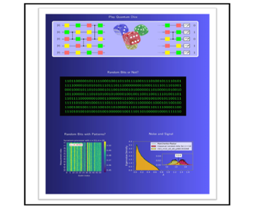
Statistical Properties of Bit Strings Sampled from Random Quantum Circuits
Quantum computers could beat current computers that are just a part of everyday life, for some computational tasks. In 2019 Google claimed so-called quantum supremacy/advantage for random circuit sampling task using the 53-qubit Sycamore quantum processor. What is random circuit sampling Google did? What are the outputs? Simply speaking, random circuit sampling is to generate random bits (0 or 1) in quantum mechanical way. It is something like playing quantum dice or quantum coin tossing. Google’s output data are about 10 million lines of bit strings, look random, but different from classical random bit strings. We showed how Google’s bit strings are different from classical bit-strings using random matrix theory and the Wasserstein distance calculation.
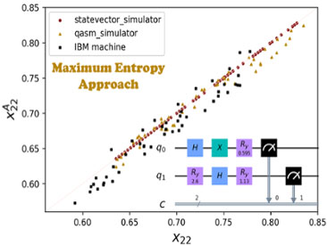
Maximal Entropy Approach For Quantum State Tomography
The current quantum computing devices are noisy intermediate-scale quantum devices, and so approaches to validate quantum processing on these quantum devices are needed. One of the most common ways of validation for an n-qubit quantum system is quantum tomography, which tries to reconstruct a quantum system’s density matrix by a complete set of observables. However, the inherent noise in the quantum systems and the intrinsic limitations pose a critical challenge to precisely know the actual measurement operators that make quantum tomography impractical in experiments. Here, we propose an alternative approach to quantum tomography, based on the maximal information entropy, that can predict the values of unknown observables based on the available mean measurement data.
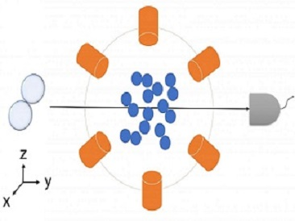
Measuring Quantum Entanglement in Chemical Reactions
Since its development in 1964, Bell’s Inequality has been validated as the go-to test that scientists use to identify entanglement in particles. The theorem uses discrete measurements of properties of particles such as the orientation their spin to find if the particles are correlated. The problem is, discovering entanglement in chemical reactions requires that measurements are continuous. This means measuring aspects such as the angles of beams which scatter reactants forcing them into contact and transform into products. We have generalised Bell’s Inequality to include continuous measurements in chemical reactions, in a similar way to how the theorem had previously been generalised to examine photonic systems.
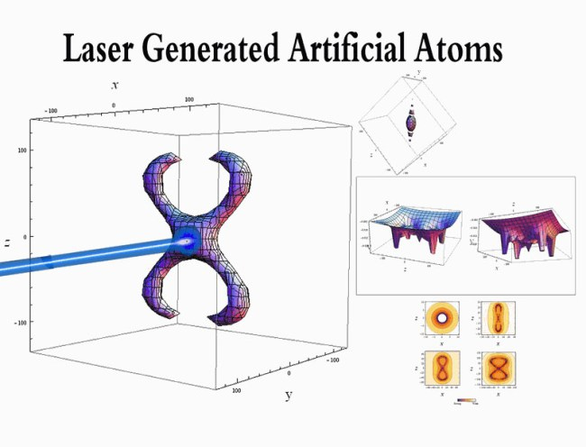
Dimensional Scaling and Finite Size Scaling for Quantum Phase Transitions and Critical Phenomena in atomic and molecular systems
We have established an analogy between symmetry breaking of electronic structure configurations and quantum phase transitions at the large dimensional limit.
A talk on finite scaling and stability of atomic and molecular systems in super intense laser fields. View PDF
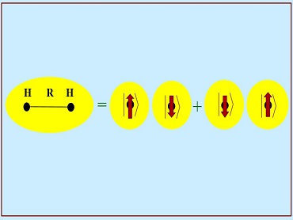
Entanglement as Measure of Electron-Electron Correlation in Quantum Chemistry Calculations
In quantum chemistry calculations, the correlation energy is defined as the difference between the Hartree–Fock limit energy and the exact solution of the nonrelativistic Schrodinger equation. We have shown that the entanglement can be used as an alternative measure of the electron correlation in quantum chemistry calculations. Entanglement is directly observable and is one of the most striking properties of quantum mechanics.
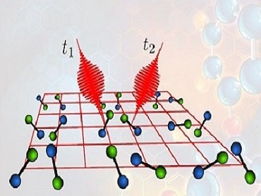
Quantum Computing Using Polar Molecules
We investigate several aspects of realizing quantum computation using entangled polar molecules. We develop methods for realizing quantum computation in the gate model, the measurement-based model and the adiabatic model using polar molecules. Moreover, we explore the possibility of a novel quantum computing model built with coupled 2-level systems. The quantum coherent states formed by coupled 2-level systems have unique properties that have inspired numerous ideas in excitonic systems and spin systems.
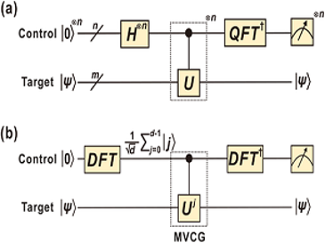
Quantum Simulation in Qudit Space
In Collaboration with the Weiner group at Purdue, we have successfully demonstrated the first implementation of the Phase Estimation Algorithm (PEA) on a qudit‐based photonic platform. This experiment utilized the high dimensionality of the time and frequency DoFs on a single photon to realize the 2‐qudit multi‐value‐controlled‐gate (MVCG) gate, circumventing the inherently probabilistic photon-photon interactions. Although limited to a proof‐of‐principle model with arbitrary‐phase diagonal unitaries, this work is a first physical demonstration of a qudit‐based PEA. Future improvements to our PEA include higher‐dimensional qudits ( >3 ), arbitrary (non‐diagonal) unitaries, and statistical estimation of the phase via large ensemble measurements.
For more details, see Quantum Phase Estimation with Time-Frequency Qudits in a Single Photon, Advanced Quantum Technologies, 1900074, (2019).

Characterization of Quantum States Based on Creation Complexity
The creation complexity of a quantum state is the minimum number of elementary gates required to create it from a basic initial state. The creation complexity of quantum states is closely related to the complexity of quantum circuits, which is crucial in developing efficient quantum algorithms that can outperform classical algorithms. A major question unanswered so far is what quantum states can be created with a number of elementary gates that scale polynomially with the number of qubits. In this work, it is first shown that for an entirely general quantum state it is exponentially hard (requires a number of steps that scales exponentially with the number of qubits) to determine if the creation complexity is polynomial.
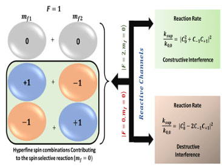
Coherently Controlling Chemical Reactions
Coherent control of chemical reactions is a long withstanding challenge. Here we propose to use quantum mechanical effects such as superposition, entanglement, and interferences to control the outcomes in chemical reactions. In our recent study of photochemical reaction, we showed that by preparing the reactants in a quantum superposition and then controlling the reactive scattering channel we can control the reaction rates. Our results show that interferences can be used as a resource for the coherent control of photochemical reactions. The approach is general and can be employed to study a wide spectrum of chemical reactions in the ultracold regime
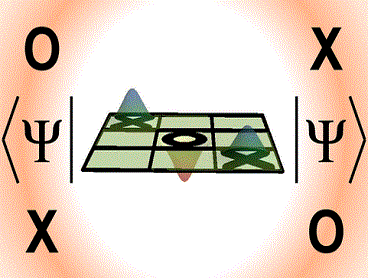
Using Quantum Games to Teach Quantum Mechanics
The learning of quantum mechanics is contingent upon an understanding of the physical significance of the mathematics that one must perform. Concepts such as normalization, superposition, interference, probability amplitude, and entanglement can prove challenging for the beginning student. Several class activities that use a nonclassical version of tic-tac-toe are described to introduce several topics in an undergraduate quantum mechanics course. Quantum tic-tac-toe is a quantum analogue of classical tic-tac-toe and can be used to demonstrate the use of superposition in movement, qualitative (and later quantitative) displays of entanglement, and state collapse due to observation.
Quantum Simulation of the Radical Pair Dynamics of the Avian Compass
The simulation of open quantum dynamics on quantum circuits has attracted wide interests recently with a variety of quantum algorithms developed and demonstrated. Among these, one particular design of a unitary dilation-based quantum algorithm is capable of simulating general and complex physical systems. We apply our developed quantum algorithm to simulating the dynamics of the radical pair mechanism in the avian compass. This work is the first application of any quantum algorithm to simulating the radical pair mechanism in the avian compass, which not only demonstrates the generality of the quantum algorithm but also opens new opportunities for studying the avian compass with quantum computing devicesQuantum Machine Learning for Drug Discovery
In drug discovery, assessing the absorption, distribution, metabolism, excretion (ADME), and toxicity of new compounds is time-consuming and costly. Recent focus on AI, big data, and cloud technologies aims to predict these properties. Quantum computation and machine learning integration are gaining attention across fields, promising advancements in high-throughput experimentation and cost-effective molecule screening. A quantum machine learning (QML) framework, combining classical support vector classifiers with quantum counterparts, is proposed. Utilizing a simplified molecular input line entry system (SMILES) notation-based string kernel, the quantum model outperforms classical ones in predicting ADME-Tox properties for small molecules. The proposed framework shows significant promise for efficiency and accuracy in pharmaceutical decision-making.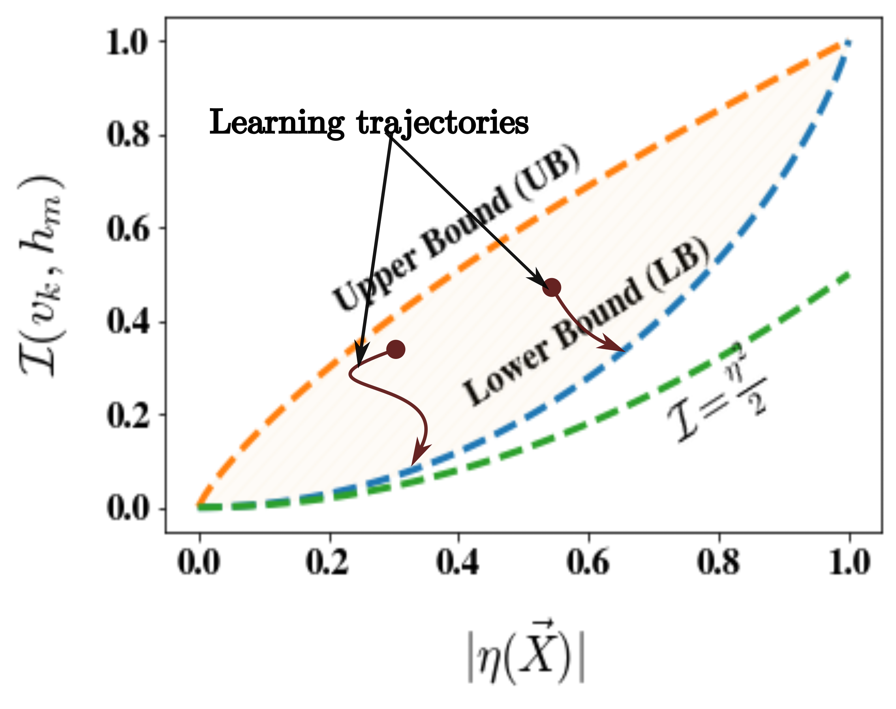
Demystifying the training dynamics of a Quantum Machine Learning model
This study explores the imaginary components of out-of-time order correlators to gain insights into the information scrambling capacity of a graph neural network in quantum machine learning. We establish mathematical bounds, connecting these components to quantum mutual information and revealing unexpected features like the saturation of lower bounds by trained networks for large physical systems. We construct an emergent convex space to elucidate geometric ramifications during training, unveiling the network's ability to mirror spin correlation across phase boundaries and distinguish exotic spin connectivity. This analysis demystifies quantum machine learning training, revealing the underlying physical mechanisms shaping the model's emulative capacity.
Quantum Simulation of Resonating Valence Bond States
Spin liquids─an emergent, exotic collective phase of matter have garnered enormous attention in recent years. In this work, we focus on a spin-1/2 unit cell of a Kagome antiferromagnet with a magnetically disordered spin-liquid ground state. The study utilizes classical numerical techniques like density-matrix renormalization group (DMRG) to identify the nature of the ground state. We constructed an auxiliary Hamiltonian with reduced measurables and a modular, gate-efficient ansatz. With error-mitigation strategies, the ansatz accurately represents the ground state on an IBM quantum device within 1% energy accuracy. The linear scaling O(n) protocol is extendable to larger Kagome lattices, offering efficient spin-liquid ground state construction on quantum devices.Review
Review Articles by Prof Sabre Kais
- "Entanglement, Electron correlation, and Density Matrices" link
- "Finite Size Scaling for Atomic and Molecular Systems" link
- "Qudits and High-Dimensional Quantum Computing" link
- "Quantum machine learning for chemistry and Physics" link
- "Finite Size Scaling for the Criticality of the Schrodinger Equation" link"Chapter 5: "Solving the Schrodinger Equation: Has everything been tried?", Editor: Paul Popelier, Available at World Scientific and Amazon